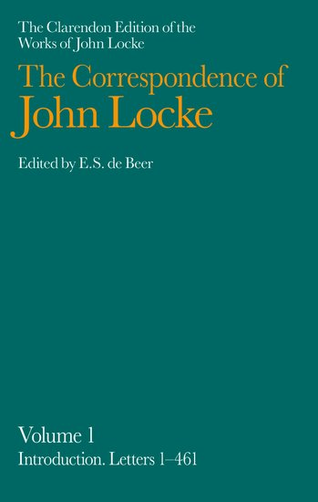

John Locke Chronology |
John Locke Manuscripts |
John Locke Resources |
John Locke Bibliography | ||
[ Table of Contents ] – [ Part One: Works by Locke ]


 Correspondence (1708- )
Correspondence (1708- )
Locke was a prolific correspondent. By good fortune, he kept most of the letters that he received and these have survived. However, he did not normally keep drafts or copies of the letters he sent, and their survival is more haphazard. Locke’s letters lack the literary polish of other seventeenth-century letters (often written for publication), but they do contain a wealth of biographical and intellectual information. Various collections have been published. The first – Some familiar letters (1708) – was probably put together by Peter King and Anthony Collins; it contains the correspondence with the Molyneux brothers and with Limborch. Other significant collections include the correspondence with Collins (1720), Boyle (1744), Furly (1830), Toinard (1912), Clarke (1927), Coste (1959) and Le Clerc (1959). A complete edition of the correspondence by E.S. De Beer is nearing completion [Locke #847].
Correspondence (Some familiar letters, 1708)
806
Some familiar letters between Mr. Locke, and several of his friends. London: printed for A. and J. Churchill … 1708. [4], 540 p. 8o.
Correspondence with William Molyneux, Thomas Molyneux and Philipp van Limborch; probably compiled by Peter King and Anthony Collins; van Limborch edited his correspondence with Locke.
Review: Le Clerc, Bibliotheque choisie (1709).
Y 346; C 81; A 806
—
Included in the collected edition of Locke’s Works (1714) [Locke #848] and in all subsequent editions. For an English translation from the van Limborch letters, see Locke #818.
807
Some familiar letters between Mr. Locke, and several of his friends. The third edition. London: printed for A. Bettesworth and C. Hitch …; J. Pemberton, …; and E. Symon, … M.DCC.XXXVII [1737]. 424 p. 8o.
Y 347; C 81-82; A 807
Rev.
808
Twenty years literary correspondence between John Locke, Esq; Messieurs Limborch, Leibnitz, and the Reverend Mr. King of Exeter, from 1685 to 1705. Wherein some of the most important theological and philosophical points are clearly discussed. With impartial characters of men and books, sects, parties and opinions. To which are subjoined, Monsieur LeClerc’s historical account of Mr. Locke’s life and writings, and his last-will and testament. The third edition. London: printed for Thomas Gardner … E. Curll … J. Hodges … J. James …; and J. Jackson … MDCCXXXIX [1739]. iv, 20 p. 2o.
Consists of the preface (by John Banks) and extracts, mostly translations of isolated sentences; perhaps a prospectus for a new edition.
Y 350 A 808
809
Familiar letters between Mr. John Locke, and several of his friends. In which are explain’d, his notions in his Essay concerning human understanding, and in some of his other works. The fourth edition. To which is added, The life and character of Mr. John Locke. London: printed for F. Noble, …; T. Wright, …; and J. Duncan … MDCCXLII [1742]. [2], 13, [2], iv-424 p.,plate. port. 8o.
Reissue of Locke #807 with a cancel title leaf and Le Clerc’s “Life” added.
Portrait of Locke by Vertue, after Kneller, in an oval frame.
Y 348; C 82; A 809
Correspondence (Some familiar letters, 1708). Selections.
New
*809A
“Extracts from the Familiar letters between Mr. Locke and his friends. Relating to a debate concerning the argument à priori, with respect to the divine unity.” // IN: A review of the argument à priori in relation the being and attributes of God: … (1726). – pp. 98-112.
Consists of quotations from Locke and Limborch’s letters, with Gretton’s comments.
Y 349
Correspondence (Collins, 1714)
New
*809B
[Letter from Locke, 23 August 1704]. // IN: An account of the life and writings of Mr. John Locke, author of the Essay concerning humane understanding. Written in French, by Mr. Le Clerc … The third edition (1714). – p. 28.
Included as a postscript in Curll’s pirated edition of Le Clerc’s Life.
Y 351
Correspondence (R. King, 1714)
810
The remains of John Locke Esq; viz. I. Some memoirs of the life and character of Dr. Edward Pococke. II. Instructions for the conduct of a young gentleman, as to religion and government, &c. III. The best method of studying, and interpreting the scriptures. IV. Sentiments concerning the Society for Promoting Christian Knowledge. Publish’d from his original manuscripts. To which are added, three copies of verses formerly written. London: printed for E. Curll … M.DCC.XIV [1714]. iv, 20 p. 2o.
Caption title: “Five letters written by John Locke Esq;”; epistle to the reader signed: R.K. [Richard King] Exon, July 10. 1714.
For the verses, see Locke #5.
Y 315; C 8, 9, 77
—
The Remains … (excluding the poems) was included in Collection of several pieces … (1720) [Locke #787] and in the 2nd edition of Locke’s Works (1722) [Locke #849] and in all subsequent editions.
Correspondence (R. King, 1714). Selections.
810A
“John Locke.” // IN: Precept and example, in the instructive letters of eminent men to their younger friends : with short biographs of the writers. – London : printed for Taylor and Hessey, 1825. – p. 99-119.
Includes two of the letters to Richard King originally printed in The Remains …
T 175
Correspondence (Collins, 1720)
811
“Several letters to Anth. Collins Esq; and other persons.” // IN: A collection of several pieces of Mr. John Locke … (1720) [Locke #787]. Pages 247-357.
Correspondence (Limborch, 1723)
812
“Kort verhael wegens de bekeering van eene juffrou die genegen zynde om joodsch te worden, weder tot een christelyken godsdienst gebragt is; getrokken uit een brief, door den Heere Philippus van Limborch geschreven aen den Heere Joannes Lock.” // IN: Philippus van Limborchs Vriendelyke onderhandeling met een geleerden Jood, over de waarheid van een Christelyken godsdienst … T’Amsterdam: by Pieter Visser, 1723. Pages 721-736.
Correspondence (Boyle, 1744)
[813]
The works of the honourable Robert Boyle. (1744)
For Locke’s letters, see vol. 5:565-571.
Y 352
Correspondence (Bold, 1746)
814
“An original letter from Mr. John Locke, to Mr. Samuel Bold, at Steeple.” // IN: The Museum: or, The literary and historical register. Numb. XX, Saturday December 20 [1746]. – pp. 205-209.
Letter dated 16 May 1699.
Reprinted by Robert Goadby in The moral and entertaining magazine, vol. 2 (1778). Unverified.
Y 353; C 83; A 814
815
“Letter from John Locke, Esq., to the Rev. Samuel Bold.” // IN: London magazine. – 1 (1820):661-664.
Letter dated 16 May 1699.
816
“A letter of Mr. Locke’s, to the Rev. Samuel Bolde” / James Hews Bransby. // IN: The Christian reformer, or Unitarian magazine and review. – 2 (1835):12-15.
Letter dated 16 May 1699.
Correspondence (Pembroke, 1753)
—
Spurious; see appendix, Locke #A36-39.
Correspondence (Collins, 1773?)
816A
“A letter wrote by (the renowned) John Locke to Anthony Collins, to be delivered to him after his decease.” // IN: Extract of a letter wrote by the Earl of Essex, to his particular friend the Earl of Southampton, sometime before his death. [With extracts from letters, Locke’s universal prayer, and The hermit, a poem]. [Philadelphia, 1773?]. Page 2.
The “Universal prayer” appears on p.5-6.
Published as part of: A collection of religious tracts. [Edited by Anthony Benezet]. Philadelphia: printed by Joseph Crukshank. 1773. 12o.
Evans 13832
Correspondence (Mapletoft, 1788)
817
“Original letters from Mr. Locke, Algernon Sidney, and Lady R. Russell, to Dr. Mapletoft” / [edited by] J.R. // IN: The European magazine, and London review. By the Philological Society of London. Vol. XIV (1788):321-323, 401-404; XV (1789):9-12, 89-91, 185-187, 273-275, 353-354, 433-434.
Y 354; C 83; A 817
Correspondence (Limborch, 1818). English.
818
“The correspondence between Locke and Limborch, translated : with historical notes” / J.T. Rutt. // IN: The monthly repository of theology and general literature. – 13 (1818):11-14, 85-88, 160-164, 225-229, 296-299, 353-357, 422-426, 476-482, 607-612, 670-675; 14 (1819):9-13, 146-149, 217-221.
English translation of letters from Some familiar letters by J.T. Rutt.
C 83; Y 1818.1
Correspondence (Collier, 1828)
—
Spurious; see appendix, item A40.
Correspondence (Furly, 1830)
819
Original letters of Locke, Algernon Sidney, and Anthony Lord Shaftesbury, author of the “Characteristics” : with an analytical sketch of the writings and opinions of Locke and other metaphysicians / by T. Forster. – London : J.B. Nichols, 1830. – cxx, 279 p.
Letters to Benjamin Furly.
For Forster’s introduction, see entry in Chapter 2.
Y 355; C 82; A 819
820
Original letters of Locke, Alg. Sidney, and Lord Shaftesbury : with an analytical sketch of the writings and opinions of Locke and other metaphysicians / by T. Forster. – 2nd ed. – London : privately printed, 1847. – lxxx, 211 p.
Y 356; C 82; Y 1830.2; A 820
Correspondence (Molyneux, 1841)
[821]
“Sir Thomas Molyneux, Bart., M.D., F.R.S.” / Sir Henry Marsh, Bart. (1841)
Includes new transcriptions of letters between Locke and Sir Thomas and William Molyneux.
Correspondence (Furly, 1845)
*822
Epistolarium, or Fasciculi of curious letters : together with a few poems and some account of the writers as preserved among the MSS. of the Forster family/ by F. – Bruges, 1845.
Edited by Thomas Forster.
Letters to Benjamin and Benjohan Furly.
Unverified; source: NUC
Correspondence (Shaftesbury, P. King, 1849)
[823]
Lives of the Lord Chancellors and Keepers of the Great Seal of England : from the earliest times till the reign of King George IV / by John Lord Campbell (1845-69)
The “Life of Lord Chancellor Shaftesbury” (vol. 3 (1845):287-377) and the “Life of Lord Chancellor King” (vol. 4 (1846):567-647) contain some Locke letters.
Correspondence (Newton, 1850)
824
Correspondence of Sir Isaac Newton and Professor Cotes : including letters of other eminent men, now first published from the originals in the Library of Trinity College Cambridge : together with an appendix, containing other unpublished letters and papers by Newton / with notes, synoptical view of the philosopher’s life, and a variety of details illustrative of his history, by J. Edleston. – London : J.W. Parker, 1850.
Includes letter from Newton to Locke, 7 July 1692 (p. 275-276)
C 83 [“Coles”]
Correspondence (Cary, 1855)
[825]
“Unpublished letters of John Locke” / [edited by] John Bruce (1855)
Letters to John Cary, 1695-1696.
Correspondence (Newton, 1855)
[826]
Memoirs of the life, writings, and discoveries of Sir Isaac Newton / by Sir David Brewster (1855)
See esp. vol. 2:318-327; includes text of letters from Newton to Locke.
Correspondence (R. Collins & R. Breekton, 1866)
827
“John Locke to two friends.” // IN: Historical magazine. – 10 (1866):101-102.
Letter from Locke to Rebecca Collins and Rachel Breekton, 11 Nov. 1699.
Correspondence (Beavis, 1884)
[828]
“John Locke” / Edward Scott (1884)
Prints a letter to Margaret Beavis, 24-27 Jan. 1670.
Correspondence (Shaftesbury, 3rd Earl, 1900)
[829]
The life, unpublished letters, and philosophical regimen of Anthony, Earl of Shaftesbury, author of the “Characteristics” / edited by Benjamin Rand (1900)
Includes letters from Shaftesbury to Locke, Coste, Le Clerc and others.
Correspondence (Graevius, 1908)
[830]
“Huit lettres de Locke à Grævius” / Ch. Bastide (1908)
Correspondence (Toinard, 1908)
831
Notes sur la correspondance de John Locke : suivies de trente-deux lettres inédites de Locke à Thoynard, 1678-1681 / H. Ollion. – Paris : Alphonse Picard et fils, éditeurs, 1908. – 144 p.
Y 357; C 82; H&W 1983; Y 1908.5; A 831
Correspondence (Du Bos, 1912)
832
“Correspondance de l’Abbé Dubos.” // IN: Lettres autographes de la collection de Troussures / classées et annotées par Paul Denis. – Beauvais : Imprimerie départementale de l’Oise, 1912. – (Publications de la Société académique de l’Oise ; 3). – p. 1-224.
Includes letters from Locke.
Correspondence (Thoynard, 1912)
833
Lettres inédites de John Locke à ses amis Nicolas Thoynard, Philippe van Limborch et Edward Clarke / publiées avec une introduction et des notes explicatives par Henry Ollion ; avec la collaboration de T. J. de Boer. – La Haye : Martinus Nijhoff, 1912. – x, 258 p.
For the introduction, see entry in Chapter 2.
Y 358; C 82; A 833
Correspondence (Clarke, 1927)
834
The correspondence of John Locke and Edward Clarke / edited, with a biographical study, by Benjamin Rand. – Cambridge, Mass. : Harvard University Press ; London : Humphrey Milford, Oxford University Press, 1927. – xiii, 607 p.
For Rand’s introduction, see entry in Chapter 2.
Reviews: Anon., “New light on Locke” (1927); G. Kennedy, J.Ph. 25 (1928):445-447; W.R. Sorley, Mind n.s.:36 (1927):507-509; F. Watson, Eng.Hist.Rev. 43:277-279.
Y 359; C 82; A 834
Correspondence (Clarke & Freke, 1936)
835
[Letter from Locke to John Freke and Edward Clarke, 14 Feb. 1696]. // IN: “A letter from John Locke” / W. Marston Acres (1936).
Correspondence (Burnet, 1949)
[836]
“Elizabeth Burnet, 1661-1709” / by C. Kirchberger (1949)
Includes Locke letters from Bodl. Lib. MS. Rawl. D.1092.
Correspondence (Aubrey, 1950)
[837]
“John Locke and John Aubrey” / Maurice Cranston (1950, 1952).
Prints two letters 20 Feb. 1694 and 11 Feb. 1673 [MS. Locke c. 3, f. 62, and PRO 36/24/7 no. 493]
Correspondence (Du Bos, 1950)
[838]
“Une amitié franco-anglaise du XVIIe siècle : John Locke et l’Abbé Du Bos : avec 16 lettres inédites de Du Bos à Locke– / Gabriel Bonno (1950)
Prints 16 letters from Du Bos to Locke [MS. Locke c. 7, ff.215-251]
Correspondence (E. Masham, 1950)
[839]
“John Locke’s correspondence with Esther Masham” / by Maurice Cranston (1950)
Prints letters from Esther Masham’s letter book [Newberry Library, Chicago].
Correspondence (Sydenham, 1955)
[840]
“Sydenham’s letters to John Locke” / by Kenneth Dewhurst (1955)
Prints letters from MS. Locke c. 19, ff. 163-168.
Correspondence (Coste, 1959)
[841]
“Locke et son traducteur français Pierre Coste : avec huit lettres inédites de Coste à Locke” / Gabriel Bonno (1959)
Includes letters from Coste [MS. Locke c. 7, ff. 140-151]
Correspondence (Le Clerc, 1959)
842
Lettres inédites de Le Clerc à Locke / edited, with an introduction and notes, by Gabriel Bonno. – Berkeley ; Los Angeles : University of California Press, 1959. – 135 p. – (University of California publications in modern philology ; 52)
Letters from MS. Locke c. 13.
Reviews: E. Mercier, Rev.Litt.Comp. 35 (1961):136-137; A. Vartanian, Mod.Philol. 60:221-223.
For Bonno’s introduction, see entry in Chapter 12.
Y 360; H&W 263; H&W 1983; Y 1959.23; A 842
Correspondence (Newton, 1959)
New
842A
The correspondence of Isaac Newton / edited by H. W. Turnbull [and others]. – Cambridge : published for the Royal Society at the University Press, 1959-77. – 7 vols.
Vol. 4 edited by J. F. Scott; vols. 5-7 edited by A. Rupert Hall and Laura Tilling.
Correspondence (Sloane, 1960)
[843]
“The correspondence between John Locke and Sir Hans Sloane” / by Kenneth Dewhurst (1960)
Correspondence (Goodall, 1962)
[843A]
“Some letters of Dr. Charles Goodall (1642-1712) to Locke, Sloane, and Sir Thomas Millington” / Kenneth Dewhurst (1962)
Prints letters from the Lovelace Collection.
Correspondence (Pitt, 1962)
[844]
“Dr. Robert Pitt’s letters to John Locke” / by Kenneth Dewhurst (1962)
Prints letters from MS. Locke c. 17, ff. 162-196.
Correspondence (Cole, 1963)
[844A]
“Dr. William Cole’s (1635-1716) letters to John Locke” / by Kenneth Dewhurst (1963)
Correspondence (Popple, 1963)
[845]
“A seventeenth-century dream interpreted” / Kenneth Dewhurst (1963)
Correspondence (Limborch, 1974)
[846]
“Tre lettere di Locke a Limborch sull’unità di Dio” / nota del socio corrispondente Mario Montuori (1974).
Letters of - Oct. 1697, 2 Apr. and 21 May 1698.
Correspondence (Le Clerc, 1987)
New
846+
Epistolario / Jean Le Clerc ; a cura di [Maria Grazia e] Mario Sina. – Firenze : Leo S. Olschki editore, 1987-97.
See “Introduzione” (vol. 1:vii-xxvii) – “John Locke (1632-1704)” (vol. 1:550-551)
Y 361
Correspondence (Boyle, 1989)
New
*846+
“Una lettera a Robert Boyle riguardante la tolleranza” / a cura di G. Frongia. // IN: Clinamen. – 3 (1989):3-18.
Unverified; source: BFI 1989:960.
Correspondence (Limborch, 1997)
New
*846+
“Quatre lettres à Philippe de Limborch sur le problème de la liberté” / John Locke ; traduit du Latin par Jean-Fabien Spitz. // IN: Philosophie. – 53 (1997):28-40.
Unverified.
Correspondence (Boyle, 2001)
New
846+
The correspondence of Robert Boyle / edited by Michael Hunter, Antonio Clericuzio and Lawrence M. Principe. – London : Pickering & Chatto, 2001. – 6 vols. – (The Pickering masters)
ISBN 1-85196-125-9.
Correspondence (Collection)
{kind=link}
847
The correspondence of John Locke / edited by E.S. de Beer. – Oxford : Clarendon Press, 1976-89. – 8 vols. – (Clarendon edition of the works of John Locke)
For De Beer’s introduction, see entry in Chapter 2.
Reviews: K.H.D. Haley, “The curiosities of Locke” [v. 1-2]; “The art of obliging” [v. 3]; “Observations from Oates” [v. 4-5]; “The invalid of Oates” [v. 6]; “The philosopher’s postbag” [v. 7]; E.J. Hundert, Am.Hist.Rev. 82 (1977):960 [v. 1-2]; J. Jones, “The man of sense” [v. 1-2]; M. Montuori, “The correspondence of John Locke” (1978) [v. 1-2]; J. Dunn, Listener 100:188-189 [v. 3], 102:352-353 [v. 4-5]; M. Goldie, E.H.R. 98 (1983):821-824 [v. 5-7]; R. Woolhouse, “Locke’s letters” (1988); J. Marshall, “John Locke’s religious, educational, and moral thought” (1990).
Abstract: PhI 2003.
An Index of Correspondents is included in John Locke Manuscripts.
Y 362; LNL 12:4; 20:4; A 847
Volume 9 will contain a supplement with additional letters, edited by Mark Goldie; Volume 10 will contain an index to the correspondence, edited by M. A. Stewart. See The Clarendon edition of the works of John Locke.
Correspondence. Selections.
New
847+
Selected correspondence / John Locke ; edited by Mark Goldie from the Clarendon edition by E.S. de Beer. – Oxford : Oxford University Press, 2002. – xxxvi, 378 p.
For the introduction by Mark Goldie, see entry in Chapter 2.
Reviews: R.S. Woolhouse, Locke studies 3 (2003):227-232; P. Schuurman, British journal for the history of philosophy 12 (2004):549-551.
ISBN 0-19-823542-9.
LS 3:6
Correspondence. French.
—
French translations by Pierre Coste of Limborch’s letters from Some familiar letters were included in Œuvres diverses (1732) [Locke #869].